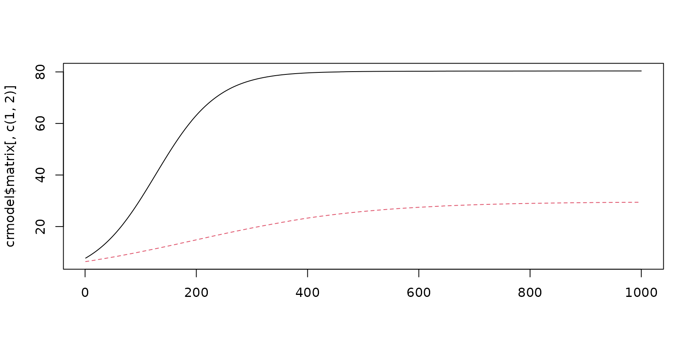

vignettes/miaSim.Rmd
miaSim.RmdmiaSim implements tools for microbiome data simulation based on different ecological modeling assumptions. These can be used to simulate species abundance matrices, including time series. For a detailed function documentation, see the function reference page
Install the Bioconductor release version with
if (!requireNamespace("BiocManager", quietly = TRUE))
install.packages("BiocManager")Load the library
Some of the models rely on interaction matrices that represents interaction heterogeneity between species. The interaction matrix can be generated with different distributional assumptions.
Generate interactions from normal distribution:
A_normal <- powerlawA(n_species = 4, alpha = 3)Generate interactions from uniform distribution:
The generalized Lotka-Volterra simulation model generates time-series assuming microbial population dynamics and interaction.
glvmodel <- simulateGLV(n_species = 4, A = A_normal, t_start = 0,
t_store = 1000, stochastic = FALSE, norm = FALSE)Ricker model is a discrete version of the gLV:
rickermodel <- simulateRicker(n_species=4, A = A_normal, t_end=100, norm = FALSE)The number of species specified in the interaction matrix must be the same as the species used in the models.
Hubbell Neutral simulation model characterizes diversity and relative abundance of species in ecological communities assuming migration, births and deaths but no interactions. Losses become replaced by migration or birth.
hubbellmodel <- simulateHubbell(n_species = 8, M = 10, carrying_capacity = 1000,
k_events = 50, migration_p = 0.02, t_end = 100)One can also simulate parameters for the Hubbell model.
hubbellmodelRates <- simulateHubbellRates(x0 = c(0,5,10),
migration_p = 0.1, metacommunity_probability = NULL, k_events = 1,
growth_rates = NULL, norm = FALSE, t_end=1000)The Self-Organised Instability (SOI) model generates time series for communities and accelerates stochastic simulation.
soimodel <- simulateSOI(n_species = 4, carrying_capacity = 1000, A = A_normal, k_events=5, x0 = NULL,t_end = 150, norm = TRUE)Stochastic logistic model is used to determine dead and alive counts in community.
logisticmodel <- simulateStochasticLogistic(n_species = 5)The consumer resource model requires the use of the randomE function, which returns a matrix containing the production rates and consumption rates of each species. The resulting matrix is used as a determination of resource consumption efficiency.
crmodel <- simulateConsumerResource(n_species = 2,n_resources = 4, E = randomE(n_species = 2, n_resources = 4))
# visualize the simulated dynamics
Consumer_plot <- matplot(crmodel$matrix[,c(1,2)], type = "l")
The abundance matrices can be converted into TreeSummarizedExperiment object. This provides access to a broad range of tools for microbiome analysis that support this format (see microbiome.github.io). More examples on TreeSummarizedExperiment object manipulation and analysis can be found at OMA Online Manual.
This example shows how to generate taxonomic abundance data, including sample metadata, and convert this into into TreeSummarizedExperiment.
A_normal <- powerlawA(n_species = 4, alpha = 3)
glvmodel <- simulateGLV(n_species = 4, A = A_normal, t_start = 0,
t_store = 1000, stochastic = FALSE, norm = FALSE)
# rownames(glvmodel) <- c(paste("Species", rownames(glvmodel), sep = "_"))
# colnames(glvmodel) <- c(paste("Sample", seq_len(ncol(glvmodel)), sep = "_"))
rownames(glvmodel$matrix) <- c(paste("Sample", seq_len(nrow(glvmodel$matrix)), sep = "_"))
df <- DataFrame(sampleID = rownames(glvmodel$matrix),
Time = seq(1, 1000, 1),
SubjectID = rep(1:4, 250),
row.names = rownames(glvmodel$matrix))
GLV_TSE <- TreeSummarizedExperiment(
assays = list(assay = t(glvmodel$matrix[,1:4])),
colData = df)The community simulations result in abundance matrix that can be stored in TreeSummarizedExperiment [@TreeSE] class object. Other fields, such as rowData containing information about the samples, and colData, consisting of sample metadata describing the samples, can be added to the TreeSummarizedExperiment class object.
hubbellmodelRates <- simulateHubbellRates(x0 = c(0,5,10),
migration_p = 0.1, metacommunity_probability = NULL, k_events = 1,
growth_rates = NULL, norm = FALSE, t_end=1000)
Hubbell_TSE <- TreeSummarizedExperiment(
assays = list(counts = t(hubbellmodelRates$matrix[,1:3])),
colData = S4Vectors::DataFrame(time = hubbellmodelRates$matrix[,"time"]),
metadata = hubbellmodelRates[which(names(hubbellmodelRates) != "matrix")])A broad range of functions are available in other packages to explore data in the SummarizedExperiment format (see e.g. microbiome.github.io).
For instance, to plot population density we can use the miaViz package:
library(miaViz)
HubbellDensityPlot <- plotAbundanceDensity(Hubbell_TSE, assay_name = "counts")
HubbellLinePlot <- plotSeries(Hubbell_TSE, x = "time")The simulationTimes function generates lists of time series that can be specified as simulation time and time points to keep in simulated time.
Time <- simulationTimes(t_start = 0, t_end = 100, t_step = 0.5,
t_store = 100)
# Time$t_sys contains all time points, and Time$t_index stores the selected index for time points to store. Therefore, Time$t_sys[Time$t_index] returns the selected time points. Note that the tail would be trimmed when the interval between start and end cannot be divided exactly by step length with no remainder.
Time$t_sys[Time$t_index]## [1] 0 1 2 3 4 5 6 7 8 9 10 11 12 13 14 15 16 17 18 19 20 21 22 23 24
## [26] 25 26 27 28 29 30 31 32 33 34 35 36 37 38 39 40 41 42 43 44 45 46 47 48 49
## [51] 50 51 52 53 54 55 56 57 58 59 60 61 62 63 64 65 66 67 68 69 70 71 72 73 74
## [76] 75 76 77 78 79 80 81 82 83 84 85 86 87 88 89 90 91 92 93 94 95 96 97 98 99It is also possible to incorporate phylogenetic tree information into TreeSummarizedExperiment objects. For further details, see:
## R version 4.2.1 (2022-06-23)
## Platform: x86_64-pc-linux-gnu (64-bit)
## Running under: Ubuntu 22.04.1 LTS
##
## Matrix products: default
## BLAS: /home/xxx/bin/R-4.2.1/lib/libRblas.so
## LAPACK: /home/xxx/bin/R-4.2.1/lib/libRlapack.so
##
## locale:
## [1] LC_CTYPE=en_US.UTF-8 LC_NUMERIC=C
## [3] LC_TIME=en_US.UTF-8 LC_COLLATE=en_US.UTF-8
## [5] LC_MONETARY=en_US.UTF-8 LC_MESSAGES=en_US.UTF-8
## [7] LC_PAPER=en_US.UTF-8 LC_NAME=C
## [9] LC_ADDRESS=C LC_TELEPHONE=C
## [11] LC_MEASUREMENT=en_US.UTF-8 LC_IDENTIFICATION=C
##
## attached base packages:
## [1] stats4 stats graphics grDevices utils datasets methods
## [8] base
##
## other attached packages:
## [1] miaViz_1.5.1 ggraph_2.0.6
## [3] ggplot2_3.3.6 mia_1.5.5
## [5] MultiAssayExperiment_1.22.0 miaSim_1.3.6
## [7] TreeSummarizedExperiment_2.4.0 Biostrings_2.64.0
## [9] XVector_0.36.0 SingleCellExperiment_1.18.0
## [11] SummarizedExperiment_1.26.1 Biobase_2.56.0
## [13] GenomicRanges_1.48.0 GenomeInfoDb_1.32.3
## [15] IRanges_2.30.0 S4Vectors_0.34.0
## [17] BiocGenerics_0.42.0 MatrixGenerics_1.8.1
## [19] matrixStats_0.62.0 BiocStyle_2.24.0
##
## loaded via a namespace (and not attached):
## [1] systemfonts_1.0.4 plyr_1.8.7
## [3] igraph_1.3.4 lazyeval_0.2.2
## [5] splines_4.2.1 BiocParallel_1.30.3
## [7] scater_1.24.0 digest_0.6.29
## [9] yulab.utils_0.0.5 htmltools_0.5.3
## [11] viridis_0.6.2 fansi_1.0.3
## [13] magrittr_2.0.3 memoise_2.0.1
## [15] ScaledMatrix_1.4.0 cluster_2.1.3
## [17] DECIPHER_2.24.0 graphlayouts_0.8.1
## [19] pkgdown_2.0.6 colorspace_2.0-3
## [21] blob_1.2.3 ggrepel_0.9.1
## [23] textshaping_0.3.6 xfun_0.32
## [25] dplyr_1.0.9 crayon_1.5.1
## [27] RCurl_1.98-1.8 jsonlite_1.8.0
## [29] ape_5.6-2 glue_1.6.2
## [31] polyclip_1.10-0 gtable_0.3.0
## [33] zlibbioc_1.42.0 DelayedArray_0.22.0
## [35] BiocSingular_1.12.0 scales_1.2.0
## [37] DBI_1.1.3 Rcpp_1.0.9
## [39] viridisLite_0.4.0 decontam_1.16.0
## [41] gridGraphics_0.5-1 tidytree_0.3.9
## [43] bit_4.0.4 rsvd_1.0.5
## [45] deSolve_1.33 ellipsis_0.3.2
## [47] pkgconfig_2.0.3 farver_2.1.1
## [49] scuttle_1.6.2 sass_0.4.2
## [51] utf8_1.2.2 ggplotify_0.1.0
## [53] tidyselect_1.1.2 rlang_1.0.4
## [55] reshape2_1.4.4 munsell_0.5.0
## [57] tools_4.2.1 cachem_1.0.6
## [59] cli_3.3.0.9000 DirichletMultinomial_1.38.0
## [61] generics_0.1.3 RSQLite_2.2.15
## [63] evaluate_0.16 stringr_1.4.0
## [65] fastmap_1.1.0 yaml_2.3.5
## [67] ragg_1.2.2 ggtree_3.4.1
## [69] knitr_1.39 bit64_4.0.5
## [71] fs_1.5.2 tidygraph_1.2.1
## [73] purrr_0.3.4 nlme_3.1-159
## [75] sparseMatrixStats_1.8.0 poweRlaw_0.70.6
## [77] aplot_0.1.6 pracma_2.3.8
## [79] compiler_4.2.1 beeswarm_0.4.0
## [81] treeio_1.20.1 tibble_3.1.8
## [83] tweenr_1.0.2 bslib_0.4.0
## [85] stringi_1.7.8 highr_0.9
## [87] desc_1.4.1 lattice_0.20-45
## [89] Matrix_1.4-1 vegan_2.6-2
## [91] permute_0.9-7 vctrs_0.4.1
## [93] pillar_1.8.0 lifecycle_1.0.1
## [95] BiocManager_1.30.18 jquerylib_0.1.4
## [97] BiocNeighbors_1.14.0 bitops_1.0-7
## [99] irlba_2.3.5 patchwork_1.1.1
## [101] R6_2.5.1 bookdown_0.28
## [103] gridExtra_2.3 vipor_0.4.5
## [105] codetools_0.2-18 MASS_7.3-58.1
## [107] assertthat_0.2.1 rprojroot_2.0.3
## [109] withr_2.5.0 GenomeInfoDbData_1.2.8
## [111] mgcv_1.8-40 parallel_4.2.1
## [113] ggfun_0.0.6 grid_4.2.1
## [115] beachmat_2.12.0 tidyr_1.2.0
## [117] rmarkdown_2.14.3 DelayedMatrixStats_1.18.0
## [119] ggnewscale_0.4.7 ggforce_0.3.3
## [121] ggbeeswarm_0.6.0